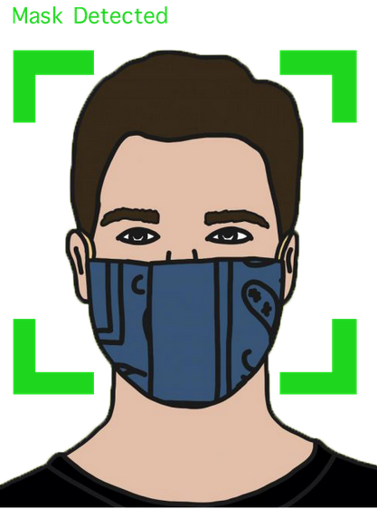
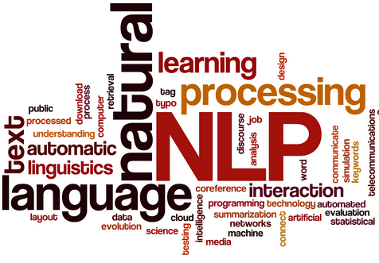
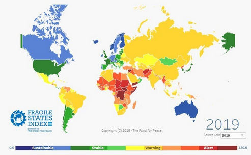

I am currently a Computer Science graduate student at
the University of North Carolina at Charlotte
I have worked in Agile Software Development and Application Support
with technologies like Java, SQL and Unix Systems.
I love Coding and solving
challenging problems. I am always eager to learn new things, technologies
and expand my skill set.
Projects
Skills
Experience
Education
Contact

Face Mask Detection using Deep Learning in OpenCV and Keras/ Tensorflow. During the pandemic too many people have tried their hand on this project.
So what did we do differently?
Incorporated an additional feature vector to our CNN model along with an image to improve classification accuracy.
Implemented System on Images as well as Live Video
Hand Gesture Controlled Drones
Developed and Compared two Hand Gesture Recognition Classifiers using Computer Vision algorithms and Machine Learning Techniques -
1. Using Fastai
2. Using OpenCV and Tensorflow/ Keras.
Implemented the latter on the Jetson Nano Developer Kit by Nvidia

A Full Stack Software system for reserving slots at the Gym for various activities, providing functionalities like User Authentication, Equipment Tracking, Book and Cancel Reservations,
Waitlist etc.
Technologies used:- Python (Django Rest Framework), React.js, Redux (library), MySql

My Implementation of Unigram, Bigram and Trigram Language Models (Character) with Laplace (Add-One) Smoothing.
Tested on the "Universal Declaration of Human Rights" Corpus from nltk, in 4 different languages - English, French, Spanish and Italian.

Extended Fragile States Index data with 6 new attributes to improve classification accuracy by 3%.
Used WEKA for descretization and classification and LISP Miner for Action Rule Mining.

Student Analysis system built in Java for a comprehensive analysis of student data using statistical techniques, that would aid professors
in evaluating students effectively.
Technologies Used:- JavaScript, PrimeFaces (library), Java (Spring Framework), MySql.
Intern Programmer
OpenDev Technologies Pvt. Ltd
(May 2020 - August 2020)
Modeled a Support Vector Machines based classifier to classify Clauses/ Articles in Legal Contracts.
Performed Data Preprocessing, NER, Sentence Decomposition and Similarity Analysis for Template Matching.
Worked on a Web-RTC based Front-End application using React and Jquery.
Technologies I worked with: Python, spacy (library), React.js, Javascript, jQuery
Programmer
Bitwise Solutions Pvt. Ltd
(August 2018 - June 2019)
Developed Java applications to retrieve and parse data, which would be fed to a Decision Engine as part of a
Fraud Detection System. Worked with Teradata and Oracle SQL databases.
Worked on a Unix framework for Batch Application processing called ‘Scalable Batch Infrastructure’.
Worked in Production Support to maintain and troubleshoot real-time as well as Batch applications.
Designed Shell Scripts to automate support processes.
Technologies I worked with:- Java, Oracle Sql, Teradata, Unix, Bash Scripting, Git, Jenkins, Websphere, Agile Development
University of North Carolina at charlotte
Master of Science
(August 2019 - May 2021)
Courses - Software Systems Design and Implementation, Algorithms and Data Structures, Parallel Computing, Cloud Computing,
Knowledge Based Systems, Machine Learning, Computer Vision, Natural Language Processing
Univeristy Pune
Bachelor of Engineering
(August 2014 - June 2018)
Courses - Software Engineering, Database Management, Analysis of Algorithms, Discrete Mathematics, Smart System Design and Analysis,
Theory of Computation